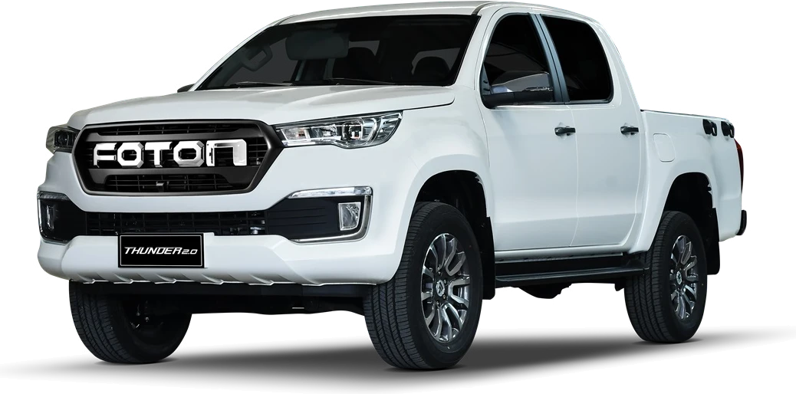

Driven by routes, backed by trust.
Direct line to Jonathan Ruelo — Foton sales rep working with Foton San Pablo. No showroom queue, just a message.
Fourteen units on the lot
Filter the rail above to swap the featured unit, or browse the full spec sheets.
Why fleet owners come back
Financing approved on-site
Bank tie-ups and in-house terms for single units or multi-unit fleet orders.
Parts on the shelf
Wear parts for Thunder, Tornado and Gratour stocked here, not in a Manila warehouse.
Service bays on the lot
Scheduled maintenance and warranty work where you bought the unit.
Fleet-rate quotes
Volume pricing for delivery services, cooperatives and construction outfits at three units or more.
What past buyers say
“Good service.”
“Great cars for business.”
Ready to talk about a unit?
Fourteen units. One lot.
Specs cover the base configuration sold at San Pablo. Ask me about dropside, wing van and F-van bodies where the platform supports them.
Flexible payment plans available.
Bank financing, in-house amortization or straight cash — message me on Viber for a free quote before you commit to anything.
How approval runs
- 01Pick the unit and body type.Dropside, F-van or MPV changes the total price.
- 02Submit two IDs and proof of income.Payslips, ITR, or six months of bank statements if self-employed.
- 03Choose bank or in-house terms.I run both sets of numbers side by side, so you see the real difference.
- 04Down payment, then release.Most units release within three to five banking days of approval.
We work with [bank / financing partner names] for easy installment plans — ask me which one fits your situation best.
What to bring
- Two government-issued IDs
- Proof of billing, latest month
- Payslip or Certificate of Employment, or ITR for business owners
- Reservation fee, deductible from the down payment
How the numbers usually shape up
| Variable | Typical range |
|---|---|
| Down payment | 20% of SRP, sometimes less with a promo |
| Loan term | 36, 48 or 60 months |
| Reservation fee | Deductible from the down payment |
General shape only — not a quotation. Send me the unit and your preferred term on Viber and I'll work out real numbers with you, same day.
Keep the unit on the road.
Four bays on-site, genuine Foton parts, and technicians who work on the Thunder, Tornado and Gratour lines every week.
Service bays
Preventive maintenance
PMS at 1,000 km, 5,000 km, then every 10,000 km. Oil, filters, brake and belt inspection.
Warranty work
Three years or 100,000 km, handled here rather than referred to another shop.
Body and paint
Dent, scratch and repaint work for fleet units logging heavy daily mileage.
Fleet check-up
Batch inspection days for delivery and logistics fleets running five units or more.
Standard PMS schedule
| Interval | Work done | Duration |
|---|---|---|
| 1,000 km | First service, oil change and general inspection | 1 hr |
| 5,000 km | Oil, oil filter, tire rotation | 1.5 hrs |
| 10,000 km | Oil, filters, brake inspection, fluid top-up | 2 hrs |
| 20,000 km | Belts, suspension, air filter, full diagnostics | 3 hrs |
Hi, I'm Jonathan Ruelo.
A Foton sales representative working with Foton San Pablo — helping San Pablo City and nearby buyers find the right van, truck or pickup since 2019.
I sell the full Foton commercial lineup: pickups, light trucks, passenger vans, MPVs and heavy-duty trucks across the Thunder, Tornado, Tunland, Traveller, Toano, Gratour, Transvan, Harabas, Hurricane, EST-M, ETX-N and EST430 series, for buyers across San Pablo City and the towns around the Seven Lakes.
Most people I work with run a business: rice traders moving sacks toward Sta. Cruz, delivery operators serving Calamba and Los Baños, cooperatives shuttling workers out to the coconut and coffee farms past the city proper. I help match the right unit to that kind of driving (short-haul, loaded, daily) and walk through financing so the numbers make sense before you sign anything.
Every unit is backed by Foton San Pablo's own service bays and standard warranty, so a vehicle bought through me gets serviced properly, not passed off to a stranger.
Get in touch.
Fastest way to reach me is Viber — real phone, address and hours below stand in for Jonathan Ruelo's actual details.
Contact details
Based at Foton San Pablo
Maharlika Highway, Brgy. San Francisco (Calihan)
San Pablo City, Laguna 4000
Hours
Monday to Saturday, 8:00 AM – 6:00 PM
Sunday, 9:00 AM – 3:00 PM